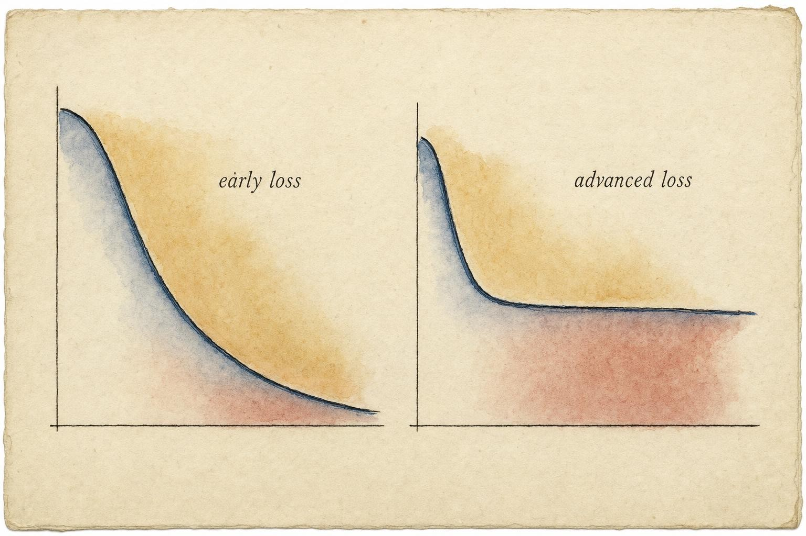
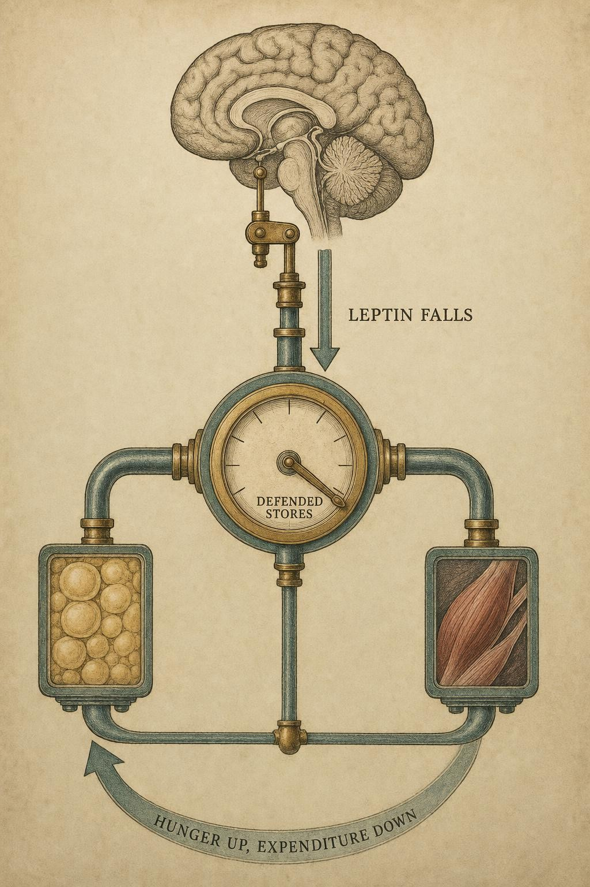

Where the Easy Wins End
Why advanced fat loss obeys different rules, and how to grade every tool by its honest effect.
The first ten pounds were free. Anyone who has been through it can describe the shape of it: a modest change to intake, a few more steps in an ordinary day, and the scale moves almost every week without argument. Nothing clever is required in that stretch, and nothing subtle is being measured. Then, somewhere past the easy part, the same person doing the exact same things stops losing. Hunger climbs. Energy sags. The deficit that once worked now seems to buy nothing at all. Nobody got lazy in between. The math did not quietly break. The body changed the rules it was playing by, and it changed them on purpose.
This chapter is about that moment, and about the two intellectual habits that let a person keep their footing once the easy wins are gone. If you take nothing else from the next reading, take this: at the advanced end of fat loss, the difference between someone who understands their own body and someone who is confused by it is not knowing more tricks. It is knowing how large each tool's real effect actually is, and for which body it was measured.
Follow one example through this chapter so the ideas stay anchored in a real shape rather than an abstraction. Priya Anand is a 34 year old amateur strength athlete preparing for her first natural physique competition. She spent four unhurried months losing body fat at a comfortable pace, roughly a pound a week, eating a moderate deficit and training four days on the platform. Nine weeks out from her show date, with her estimated body fat down from 24 percent to 11 percent, her weight simply stopped moving. She had not changed her food, her training, or her sleep. Her first assumption was that she had quietly stopped trying hard enough. She had not. Priya's case is not exotic. It is what advanced fat loss looks like once the forgiving part of the process ends, and her situation will return across this chapter to keep the physiology honest.
The forgiving early game
Beginner fat loss is forgiving for two boring, powerful reasons. First, a person carrying more fat mass has more easily mobilized tissue and a larger absolute energy expenditure, so the same behavioral change produces a bigger absolute deficit in that body than it would in a leaner one. Second, the body has not yet fully mounted its defenses. The compensatory machinery that opposes weight loss takes time to ramp up, and its ultimate size scales with how far a person has pushed below the body's preferred operating point, not with how many weeks have passed on a calendar.
Kevin Hall's mathematical modeling of human metabolism makes the first point quantitatively. For the same change in energy intake, a person with greater initial adiposity has a larger expected weight loss, and the whole system responds slowly, with a half-time on the order of a year (Hall et al., 2011). Practically, that means a weight trajectory does not snap to its new steady state, it creeps toward it for a long time, so the same absolute deficit produces a shrinking rate of loss purely as a mathematical consequence of the body's own inertia. That slowness is why early results feel almost linear and why later results feel like wading through setting concrete. Nobody is watching willpower decay in real time. They are watching a slow feedback system finally catch up to the perturbation that was introduced months earlier.
So the honest framing of the "easy wins" is not that beginners are trying harder than everyone else. It is that beginners are operating in a regime where the body's opposition is small and the fuel reserves are plentiful. Advanced fat loss is simply the same person, later, in a regime where the opposition is large and the fuel is scarce. Nearly everything in this chapter, and in the rest of this course, lives in that second regime, which is also exactly the regime Priya entered the week her weight stopped moving.

The same effort meets rising resistance as the deficit deepens." data-image-idx="0" style="display:block;max-width:100%;max-height:75vh;height:auto;width:auto;margin:0 auto;cursor:pointer;">The defended setpoint, in plain mechanism
The central physiological fact of advanced fat loss is that the body appears to defend an amount of stored energy. Push adiposity down and a coordinated set of responses pushes back. This is the defended fat-mass setpoint, and the cleanest early demonstration of it came from a metabolic ward, not a marketing claim.
Leibel, Rosenbaum, and Hirsch took 18 people with obesity and 23 who had never had obesity and measured 24 hour total energy expenditure, resting and non-resting expenditure, and the thermic effect of feeding under three conditions: at usual weight, after losing 10 to 20 percent of body weight by underfeeding, and after gaining 10 percent by overfeeding (Leibel et al., 1995). The result is the one to memorize. Maintaining a reduced body weight triggered a drop in energy expenditure larger than the smaller body alone would predict. Maintaining an elevated weight did the mirror-image thing, pushing expenditure up beyond what the larger body would predict. The body behaved as if it had a target range and spent energy to return to it from either direction. Critically, both groups, the formerly obese and the never obese, responded in the same way, so this is not a quirk unique to a particular body type. It is ordinary human physiology, present in essentially everyone who has ever moved their weight away from its accustomed range.
The mechanism behind that behavior is what Rosenbaum and Leibel later named adaptive thermogenesis: a reduction in energy expenditure beyond what the loss of tissue mass would explain on its own, driven by changes in the autonomic nervous system (the branch of the nervous system that regulates involuntary functions like heart rate and metabolic rate), the thyroid axis, skeletal muscle work efficiency, and satiety signaling, most of which are reversible by restoring the hormone leptin (Rosenbaum & Leibel, 2010). Leptin is a hormone released by fat tissue in rough proportion to how much fat tissue exists. When fat mass falls, leptin falls with it, and the brain reads that falling leptin level as a scarcity alarm. It responds by turning down the metabolic thermostat and turning up hunger, a coordinated pair of moves that makes continued fat loss both slower to achieve and harder to tolerate at the same time. Rosenbaum and Leibel pair this mechanism with a sobering population fact: recidivism back to pre-loss fatness exceeds 80 percent, and it is not mostly a story about weak character. It is a story about a defended system successfully doing the job it evolved to do.
How long does the defense last, and what is it actually made of
Long enough to matter for years, not weeks. The most vivid real-world evidence comes from Fothergill and colleagues, who followed 14 former "Biggest Loser" contestants for six years after their extreme weight loss (Fothergill et al., 2016). Measuring resting metabolic rate (RMR, the amount of energy the body burns at complete rest) by indirect calorimetry and body composition by dual-energy X-ray absorptiometry (DXA, an imaging method that separates fat mass from lean mass), they found metabolic adaptation was still present six years later, averaging roughly 500 kilocalories (kcal) per day below what would be predicted from body composition and age alone. That suppression had not resolved with time, and it was largest in the contestants who had regained the most weight, a detail worth sitting with, because it means the defense outlasted the very behaviors that originally produced the loss. This is not a finding meant to frighten anyone attempting a large loss. It is a finding meant to set the honest timescale of the problem. The defense is not a passing phase that a short diet break lets a person outlast. For some people it becomes something closer to a long-term companion.
What is that suppression actually built from? Müller and Bosy-Westphal reviewed the components underlying adaptive thermogenesis and reported an average magnitude around 120 kcal per day beyond what tissue loss would predict, with considerable variation from person to person in both size and timing (Müller & Bosy-Westphal, 2013). Their review breaks the phenomenon into contributing pieces rather than treating it as one mysterious blob: reduced activity of the sympathetic nervous system (SNS, the branch of the autonomic nervous system that raises heart rate, alertness, and energy expenditure during demand), a fall in circulating triiodothyronine (T3, the active thyroid hormone that helps set the pace of cellular metabolism), improved mechanical efficiency in skeletal muscle so that the same movement costs fewer calories to perform, and a drop in non-exercise activity thermogenesis (NEAT, the energy spent on everyday fidgeting, posture, and incidental movement that is not deliberate exercise). None of these pieces requires more than a couple of weeks to begin showing up, which matters because it means the adaptation is not a late punishment reserved for people who diet too long. It is an early, layered response that begins accumulating almost as soon as a meaningful deficit starts, and its ultimate size depends on how far below the defended range a person has pushed, not primarily on the calendar.
Setpoint, or settling point? A necessary caveat
Here is where an honest chapter parts ways with a dogmatic one. The strict setpoint model, a single tightly regulated target defended by active feedback in both directions, is a useful first approximation, but it is not the whole story. Speakman and colleagues laid out the competing alternatives: settling-point models, in which weight simply stabilizes wherever intake and expenditure passively balance in a given environment, with no active target at all, and the dual intervention point model, in which the body defends strongly only at an upper and a lower boundary and drifts fairly freely between them (Speakman et al., 2011). Their central argument is that a rigid, symmetric setpoint cannot by itself explain a population-wide rise in body weight, because a strong defense pulling equally in both directions should have resisted that rise just as forcefully as it resists loss. Something in the model has to be asymmetric to fit the real-world pattern.
Why does this distinction matter at the advanced end of fat loss specifically? Because it explains an asymmetry that shows up constantly once the easy wins are gone. The lower boundary, the defense that activates against leaning out, is typically the fierce one, engaging hard and early. The upper boundary tends to be looser, more permissive, slower to resist an increase. That lower wall is precisely what an advanced dieter presses against, week after week, as the deficit deepens. The framing worth carrying forward is not "everybody has one fixed number etched into their biology." It is closer to "the body defends its lower territory hard, defends its upper territory loosely, and the strength of that lower defense differs meaningfully from one person to the next." That last clause, the part about differing between people, is the second great theme of this chapter, and it is the theme Priya's stall sits squarely inside.
Why the lower boundary is defended so much harder
The asymmetry between the two boundaries is not arbitrary, and it becomes far more intuitive once it is placed in an evolutionary frame rather than a modern one. For nearly the entire span of human evolutionary history, the realistic threat to survival was running out of stored energy during a famine, an illness, or a lean season, not carrying too much of it. A body that responded weakly to falling fat mass, failing to lower expenditure and raise hunger when reserves ran low, would have been at a real disadvantage against starvation, an outcome with an immediate and severe cost to survival and reproduction. A body that responded weakly to rising fat mass, by contrast, faced a much smaller and slower-acting cost, since abundant food was, for nearly all of human history, a rare circumstance rather than a chronic one. Natural selection had every reason to build a robust, fast, and forceful defense against the lower boundary, and comparatively little pressure to build an equally forceful defense against the upper one. The modern food environment, which supplies abundance on demand, did not have time to reshape that asymmetry. The lower defense a person presses against during an advanced fat-loss effort is, in a real sense, ancient machinery doing exactly the job it was built for, in a world that no longer resembles the one that built it.
This is also why the phrase "starvation mode" persists in casual conversation despite being an oversimplification. The body is not shutting down in any dramatic or complete sense during a well-managed deficit. It is executing a graded, proportional defense that intensifies the closer a person gets to their individual lower boundary, drawing on the sympathetic nervous system, thyroid axis, muscular efficiency, and non-exercise movement components described earlier, all coordinated by the falling leptin signal. Framing it as a switch that is either on or off obscures the far more useful and far more accurate picture, which is a dial that turns up gradually as the defended floor approaches.

Falling leptin reads as a scarcity alarm; the brain answers by lowering output and raising drive." data-image-idx="1" style="display:block;max-width:100%;max-height:75vh;height:auto;width:auto;margin:0 auto;cursor:pointer;">Individual variation: same deficit, different person
Put two people in the identical prescribed deficit and expect the identical result, and reality will disappoint that expectation more often than not. This is not noise that better coaching or more willpower makes disappear. It is a real, measurable feature of underlying physiology, and pretending otherwise is one of the most common and most costly errors made when reasoning about advanced fat loss.
Harper and colleagues put a number on it. Reviewing the evidence on interindividual variability in weight-loss response to energy restriction, they report that genome-wide common genetic variants account for roughly 49 percent of the phenotypic variance in how much weight a person loses under a given dietary restriction (Harper, McPherson, & Dent, 2021). Read that carefully: nearly half of the between-person difference in outcome is traceable to genetics before behavior even enters the picture. The same review draws a distinction worth adopting as working vocabulary. "Diet-resistant" individuals display greater metabolic adaptation than "diet-sensitive" individuals, with the difference reaching down into mitochondrial efficiency and genetic mechanisms that predate any decision the person made about their diet. The authors note, pointedly, that this conclusion is often met with resistance within the health care system itself, because it complicates the tidy story that outcome always equals effort.
An older but strikingly direct demonstration comes from Bouchard and colleagues, who deliberately overfed 12 pairs of identical twins by 1,000 kcal per day for 84 consecutive days and measured how much weight and fat each twin gained (Bouchard et al., 1990). Total weight gain varied roughly threefold across the twin pairs, from about 4.3 kilograms up to about 13.3 kilograms, even though every participant was overfed by the exact same amount for the exact same length of time. Crucially, the two members of any given twin pair tended to gain very similar amounts to each other, far more similar than unrelated pairs given the identical protocol. That pattern, large variation between families and tight agreement within them, is the signature of a genetic contribution to how a body responds to an energy surplus, and there is no obvious reason the same biology would switch off when the sign of the imbalance flips from a surplus to a deficit. Hall's modeling reinforces the same conclusion from a different angle: a meaningful share of the variability in weight-loss outcomes traces to differences in initial body composition and baseline energy expenditure, not to adherence alone (Hall et al., 2011). Two people, the same protocol on paper, honestly different bodies underneath it, and honestly different results at the end.
A word on measurement humility
Before adaptive thermogenesis becomes the explanation reached for every single stall, it is worth respecting the genuine messiness in the underlying evidence. The Müller and Bosy-Westphal review discussed above is candid on this point: how large the measured adaptation appears depends heavily on the method used to estimate it and on how carefully a study adjusts for the loss of metabolically active tissue, since simply losing muscle and organ mass will itself lower resting expenditure even without any additional adaptive component layered on top (Müller & Bosy-Westphal, 2013). Studies vary in their calorimetry equipment, their statistical adjustment strategy, and the length of time they follow participants, and those methodological choices move the estimated size of the effect around. The professional posture that falls out of this is neither denial nor mysticism. Adaptation is real, it is variable between individuals, and its measured size is sensitive to how a given study chose to look for it. Holding all three of those facts at once, rather than picking the one that is most convenient for a given argument, is what separates careful reasoning from a slogan.
That boundary matters concretely here, because a genuine physiological stall can look, from the outside, like several conditions that are not simply adaptive thermogenesis. Persistent low energy that does not lift with adequate sleep, a missed or irregular menstrual cycle, unusual cold intolerance, hair thinning, or a mood shift alongside the stall are signs that warrant evaluation by an appropriate clinician rather than a private diagnosis reached from a textbook chapter. Learning the physiology in this chapter is what equips a person to notice that something looks outside the range of ordinary adaptation. It is not what equips them to rule out a medical cause on their own.
Honest effect size versus statistical significance
Now the first of the two habits this chapter installs. A study reporting that a tool "significantly increased fat oxidation" is telling a reader the effect is unlikely to be exactly zero. It is not telling that reader the effect is large enough to matter in daily life. Statistical significance is a statement about confidence that something is nonzero. Honest effect size is a completely separate statement about how big that something is, expressed in units a person can actually act on, together with how reliably the effect shows up from one person to the next. A result can be statistically significant and practically trivial at the same time, and advanced fat loss is exactly the terrain where that gap does the most damage, because every kilocalorie of margin has already been spent finding the easy wins.
Consider a "thermogenic" supplement that raises 24 hour energy expenditure by a statistically significant amount in a published trial. Suppose the honest mean effect is roughly 50 kcal per day, with a wide person-to-person spread around that average. That effect is real in the sense that it is unlikely to be pure noise. It is also, at the advanced end of a fat-loss effort, close to a rounding error against a deficit that could be matched by adjusting a single snack, and it arrives bundled with variability large enough that some people get essentially nothing from it. The marketing headline and the honest effect size are both technically "true." They are simply answering two different questions, and the discipline this chapter teaches is learning to notice which question is actually being answered before acting on the answer.
Three questions grade any advanced tool honestly, and they are worth running through every single time a new claim shows up:
- Magnitude. How large is the average effect, expressed in units that matter, kilocalories, grams of fat, adherence, or recovery? Convert every claim into a number that can be compared directly against the actual size of the deficit already in place.
- Reliability. How wide is the spread around that average? A tool with a small mean and a huge spread is closer to a coin flip dressed up as a strategy than it is to a dependable lever.
- Opportunity cost. What does deploying this particular tool cost in attention, adherence budget, money, or recovery capacity that could otherwise have gone toward something with a larger honest effect?
Almost every advanced tool discussed anywhere in this course survives the first question and quietly dies on the second or third when it gets misapplied to the wrong situation. That is not cynicism about the tools themselves. It is the discipline that keeps a person credible, including credible with themselves, the next time an exciting new claim crosses their feed.
A practical habit worth building here is converting every claimed effect into the same currency: a rough weekly fat-mass equivalent. One pound of body fat represents roughly 3,500 kcal of stored energy, and one kilogram represents roughly 7,700 kcal, figures that are simplifications of a more complex reality but useful enough for a sanity check. A tool delivering an honest 50 kcal per day works out to about 350 kcal across a week, a fraction of one tenth of a pound of fat, and that is before accounting for the possibility that the body quietly compensates elsewhere. Running this same rough conversion on every claim, whether it involves a supplement, a piece of equipment, a training method, or a recovery practice, turns a vague sense of "this seems promising" into a comparable number that can be weighed directly against the size of the deficit already doing the actual work.
A tool that does something is not the same as a tool that does enough, for this person, to justify its cost.
The working definition of honest effect size
Population fit: who is this actually for?
The second habit this chapter installs is the natural partner of the first. Once a person accepts that effects have a spread, the obvious next question becomes: where in that spread does this particular body sit? Population fit is the practice of asking, for any tool or claim, which bodies it was actually studied in and which body it is now about to be applied to.
A lean physique competitor sitting at 7 percent body fat and a person carrying 32 percent body fat are not the same organism, even though both are unmistakably human and both can be pursuing fat loss with equal seriousness. They differ in absolute energy expenditure, in circulating leptin levels and therefore in how loudly the scarcity alarm described earlier is currently ringing, in how much easily mobilized fat tissue remains available, and in how much room exists before that fierce lower defense engages in earnest. A cold-exposure protocol, a caffeine dose, or a hard training session lands very differently on each of these two bodies. The identical intervention can be a rounding error for one person and a meaningful lever for the other, or it can be perfectly tolerable for one and genuinely destabilizing for the other, and a study result that averages across a mixed population of both types will not tell either individual what to expect.
This is why a stall in a lean competitor and a stall in a person carrying substantially more body fat are usually two different problems wearing the same costume. The lean competitor is deep into the defended lower territory, where adaptation is large, leptin is low, hunger is loud, and nearly every tool's honest effect shrinks relative to what a general-population study reported. The person carrying more body fat is typically still standing in more forgiving terrain, where the same tool may retain considerably more of its published magnitude. Population fit is the lens that prevents someone from copying a peaking protocol built for a stage-ready competitor and applying it, unmodified, to a body with a fundamentally different starting point and a fundamentally different defended range.
Some of that mismatch is mechanistic and can be stated plainly. A leaner body has a smaller absolute fat reserve to draw on, so the same percentage deficit represents a larger relative demand on remaining stores. A leaner body also tends to run a lower thermic effect of feeding, the modest rise in energy expenditure that follows a meal as the body processes it, and a lower baseline non-exercise activity thermogenesis once adaptation has already been running for weeks, leaving less slack available to absorb a new intervention. A higher body-fat body, still relatively early in its own defense curve, typically has more of that slack intact. None of this means a leaner person cannot make further progress. It means the tools available to make that progress are fewer, smaller in their honest effect, and far more sensitive to correct application than the same tools would be for someone standing earlier in the process.
Priya's stall is a clean illustration of exactly this mismatch. At 11 percent body fat and nine weeks from a competition, her leptin is almost certainly low, her defended lower boundary is close, and any tool she reads about online was very likely tested in a study population that looked nothing like her. A protocol built and validated in overweight, sedentary adults, the population most fat-loss research actually recruits, was never promised to transfer cleanly to someone sitting near the defended floor of human body-fat regulation. Reading population fit correctly does not mean assuming every tool fails for a lean person. It means asking the question explicitly instead of assuming a study's average result applies uniformly to every body that might use the tool.
A worked example: grading a claim end to end
Walk through the full grading habit with a concrete scenario, using Priya's situation directly, because the whole chapter is this same move repeated on different claims.
The claim. A supplement is marketed with language stating it "significantly increases resting energy expenditure and accelerates fat loss," citing a peer-reviewed trial in the fine print. Priya finds it while searching for something to break through her stall.
Step one, magnitude. Reading past the headline into the actual trial, the honest mean increase reported is about 50 kcal per day. Converted into a weekly figure, 50 kcal per day is roughly 350 kcal per week, which is under one tenth of a pound of fat weekly, and only if nothing else in the body compensates for it. Against someone already contending with adaptive thermogenesis, the body may quietly absorb that difference elsewhere, for instance by trimming non-exercise activity thermogenesis, leaving the net result even smaller than the trial's headline number suggests.
Step two, reliability. The trial's confidence interval is wide and the standard deviation large. Some participants responded meaningfully, others showed essentially nothing. This is a tool with a small average and a big spread, which means nobody can promise in advance that any specific person, including Priya, will land on the responder side of that spread.
Step three, population fit. The trial recruited overweight, previously untrained adults, a population standing in relatively forgiving physiological terrain. Priya is a lean competitor nine weeks from her show. Her leptin is low, her adaptation is already substantial, and there is every reason grounded in the setpoint literature to expect the honest effect to shrink further at her body-fat level rather than transfer cleanly from a very different population (Rosenbaum & Leibel, 2010).
The verdict. The claim is technically true and, for Priya specifically, practically trivial. The honest answer is not to say the supplement "does nothing," since that overstates the case in the opposite direction. The honest answer is that it does something small, unreliable, and probably smaller still for a body already this lean, and that the money, attention, and hope it costs are better redirected toward adherence, sleep, and training quality, the levers with the largest honest effect remaining available to her. That calm, specific sentence, rather than either blind enthusiasm or blanket dismissal, is what separates careful reasoning from a sales pitch.
Plateaus are physiology, not failure
Assemble the pieces and the plateau stops being a moral event. It is the predictable output of a defended system doing exactly what it evolved to do. As fat mass falls, leptin falls, the brain reads scarcity, and it lowers energy expenditure below what the smaller body would predict while simultaneously raising hunger (Leibel et al., 1995; Rosenbaum & Leibel, 2010). That adaptation begins accumulating within the first couple of weeks of a meaningful deficit and is built from several contributing pieces, including reduced sympathetic nervous system activity, falling thyroid hormone, improved muscular efficiency, and reduced non-exercise movement (Müller & Bosy-Westphal, 2013), and for some people it can persist for years after the loss itself (Fothergill et al., 2016). Its size varies enormously between people, with roughly half the variance in loss response traceable to genetics (Harper, McPherson, & Dent, 2021; Bouchard et al., 1990), and the lower boundary of the defended range is, of the two boundaries, consistently the one defended hardest (Speakman et al., 2011).
So when one person stalls where another keeps losing on what looks like an identical plan, there is now a real explanation available rather than a blame narrative. Different starting body fat, different baseline expenditure, different genetic responsiveness, different strength of the lower defense, different proximity to that defended floor. The plateau is the system working correctly, not a person failing at it. The task from here is not to moralize about the stall but to grade the remaining available tools honestly and apply the ones whose effect actually survives contact with this particular body, at this particular body-fat level, rather than the tools that merely sound impressive in a headline.
One boundary is worth stating plainly again before this chapter closes. When fatigue, mood change, menstrual disruption, disordered eating signals, or any pattern that reads as dysfunction rather than expected adaptation shows up alongside a stall, that pattern is a sign warranting evaluation by an appropriate clinician, not a puzzle to be solved through further reading. Grading tools honestly includes grading the honest limits of what a course like this one can responsibly cover.
Key Takeaways
- Beginner fat loss is forgiving because more tissue is easily mobilized and the body's defenses have not fully engaged; advanced fat loss lives in the opposite regime, where the same effort meets rising resistance.
- The body defends its stored energy. Reduced-weight maintenance lowers energy expenditure beyond what the smaller body predicts, driven by leptin-linked adaptive thermogenesis (Leibel et al., 1995; Rosenbaum & Leibel, 2010).
- Adaptation is built from several components, including sympathetic nervous system activity, thyroid hormone, muscular efficiency, and non-exercise movement, begins within the first couple of weeks, and can persist for years after major weight loss (Müller & Bosy-Westphal, 2013; Fothergill et al., 2016).
- The strict setpoint is a first approximation; the lower boundary is defended most fiercely, and models like the dual intervention point better fit the observed asymmetry (Speakman et al., 2011).
- Roughly half the variance in weight-loss and weight-gain response is genetic; "diet-resistant" individuals show greater adaptation than "diet-sensitive" ones, and identical twins gain and lose in far more similar amounts than unrelated people (Harper, McPherson, & Dent, 2021; Bouchard et al., 1990; Hall et al., 2011).
- Honest effect size, not statistical significance, is the grading unit: judge magnitude, reliability, and opportunity cost, in units that can actually be acted on.
- Population fit asks which body a tool was tested in versus the body it is now being applied to; a lean competitor and a person carrying substantially more body fat are not the same organism.
- Plateaus are physiology, not failure; signs of genuine dysfunction warrant evaluation by a qualified clinician and lie outside the scope of self-directed reasoning.
Next we descend from the whole organism to a single cell. If the setpoint is defended, something has to do the defending, and the fat cell is not the passive storage tank the old textbooks drew. In Chapter 2 we open the adipocyte as an active endocrine organ, meet leptin at its source, and see how the signal that triggers everything covered today is actually made, released, and read by the brain.
References
Bouchard, C., Tremblay, A., Despres, J. P., Nadeau, A., Lupien, P. J., Theriault, G., Dussault, J., Moorjani, S., Pinault, S., & Fournier, G. (1990). The response to long-term overfeeding in identical twins. The New England Journal of Medicine, 322(21), 1477-1482. https://doi.org/10.1056/NEJM199005243222101
Fothergill, E., Guo, J., Howard, L., Kerns, J. C., Knuth, N. D., Brychta, R., Chen, K. Y., Skarulis, M. C., Walter, M., Walter, P. J., & Hall, K. D. (2016). Persistent metabolic adaptation 6 years after "The Biggest Loser" competition. Obesity, 24(8), 1612-1619. https://doi.org/10.1002/oby.21538
Hall, K. D., Sacks, G., Chandramohan, D., Chow, C. C., Wang, Y. C., Gortmaker, S. L., & Swinburn, B. A. (2011). Quantification of the effect of energy imbalance on bodyweight. The Lancet, 378(9793), 826-837. https://doi.org/10.1016/S0140-6736(11)60812-X
Harper, M. E., McPherson, R., & Dent, R. (2021). Interindividual variability in weight loss in the treatment of obesity. The American Journal of Clinical Nutrition, 114(2), 824-825. https://doi.org/10.1093/ajcn/nqab213
Leibel, R. L., Rosenbaum, M., & Hirsch, J. (1995). Changes in energy expenditure resulting from altered body weight. The New England Journal of Medicine, 332(10), 621-628. https://doi.org/10.1056/NEJM199503093321001
Muller, M. J., & Bosy-Westphal, A. (2013). Adaptive thermogenesis with weight loss in humans. Obesity, 21(2), 218-228. https://doi.org/10.1002/oby.20027
Rosenbaum, M., & Leibel, R. L. (2010). Adaptive thermogenesis in humans. International Journal of Obesity, 34(Suppl 1), S47-S55. https://doi.org/10.1038/ijo.2010.184
Speakman, J. R., Levitsky, D. A., Allison, D. B., Bray, M. S., de Castro, J. M., Clegg, D. J., Clapham, J. C., Dulloo, A. G., Gruer, L., Haw, S., Hebebrand, J., Hetherington, M. M., Higgs, S., Jebb, S. A., Loos, R. J. F., Luckman, S., Luke, A., Mohammed-Ali, V., O'Rahilly, S., ... Westerterp-Plantenga, M. S. (2011). Set points, settling points and some alternative models: Theoretical options to understand how genes and environments combine to regulate body adiposity. Disease Models & Mechanisms, 4(6), 733-745. https://doi.org/10.1242/dmm.008698